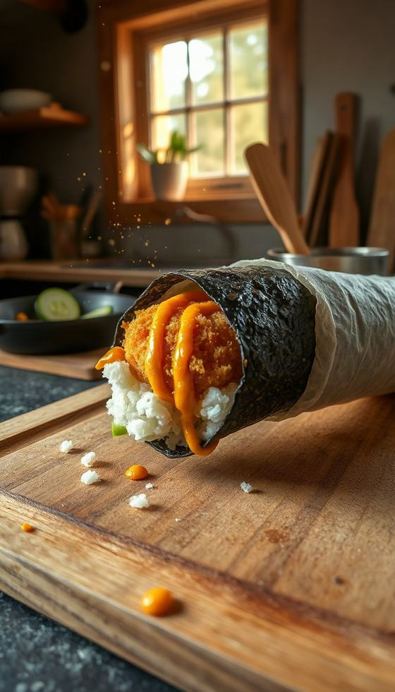
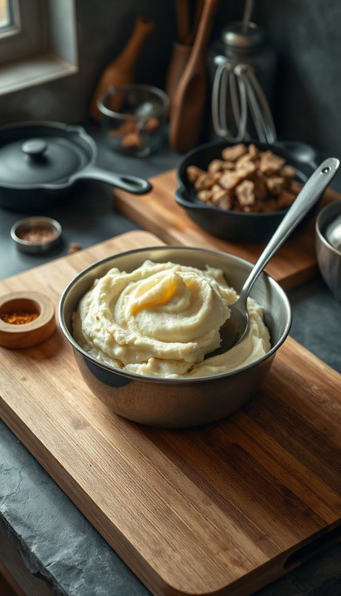
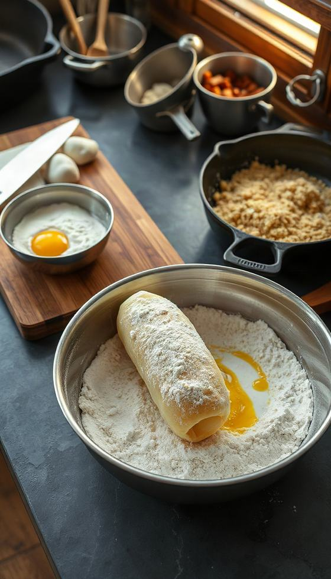
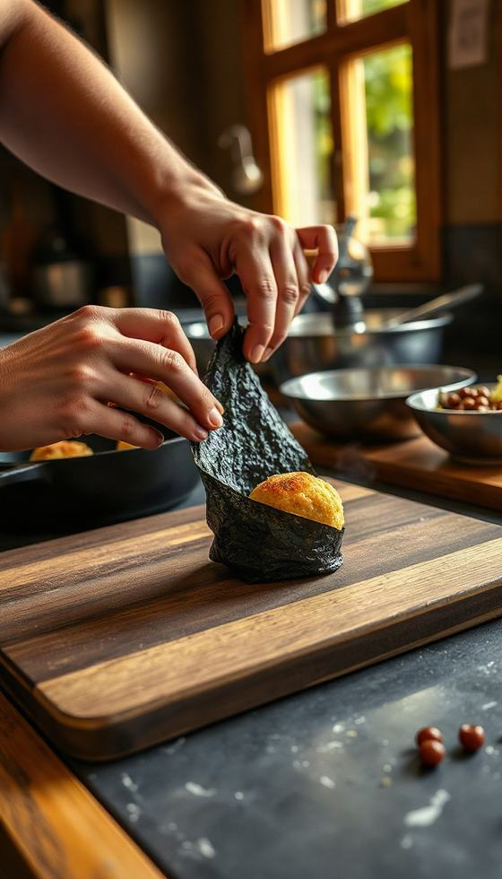

Pantry Challenge
Leftover Mashed Potato Korokke Hand Rolls
About $4.85* · 4 servings · 20 min
*Prices are estimates and may differ from what you pay. How we price recipes
Cold leftover mash → shatter-crisp croquettes rolled in nori. 🥔🍙




Ingredients
- 2 cups cold leftover mashed potatoes (about 400 g potatoes' worth, already made with butter and milk)
- 2 tbsp all-purpose flour, plus extra if the mash is very soft
- 1 large egg
- 3/4 cup panko breadcrumbs
- 1/2 cup vegetable oil, for shallow frying
- 2 cups cold cooked white rice (leftover, refrigerated no more than 3 days; short-grain is stickiest if you have it)
- 2 tbsp rice vinegar
- 1 tsp white sugar
- 1/4 tsp salt
- 4 sheets nori, cut in half (8 half-sheets)
- 1/2 cucumber, cut into thin matchsticks
- 3 tbsp mayonnaise
- 1 tbsp sriracha
- 2 tbsp soy sauce, for dipping
Steps
- Shape the croquettes (3 min): Take the mash straight from the fridge. If it feels sticky or loose, work in 1 to 2 extra tbsp flour. Roll it into 8 finger-shaped logs about 10 cm long and 2 cm thick.
- Bread them (2 min): Put the 2 tbsp flour, the beaten egg and the panko in three shallow bowls. Roll each log in flour, then egg, then panko, pressing the crumbs on firmly.
- Fry (7 min): Heat the 1/2 cup oil in a large skillet over medium-high to about 350°F (175°C), until a panko crumb sizzles immediately. Fry the logs, turning every 1.5 to 2 minutes, for 6 to 7 minutes total until deep golden on all sides and steaming hot in the center (74°C/165°F). Drain on paper towel.
- Season the rice while they fry (3 min): Microwave the rice with 1 tbsp water, covered, for 2 to 3 minutes, stirring halfway, until steaming hot all the way through. Stir the vinegar, sugar and salt together until dissolved, then fold into the rice with a cutting motion and spread it on a plate to cool to warm.
- Mix the spicy mayo (30 sec): Stir the mayonnaise and sriracha together. Add more sriracha if you like it hotter.
- Roll and eat (3 min): Lay a half-sheet of nori shiny side down in your palm. Press about 1/4 cup rice onto the left third. Lay a croquette and a few cucumber sticks diagonally across the rice and drizzle with spicy mayo. Fold the bottom-left corner up over the filling and roll into a cone. Serve right away with soy sauce for dipping, while the nori and panko are still crisp.
What you'll need
Gear links go to Amazon (Amazon.ca, or Amazon.com in the US). As an Amazon Associate I earn from qualifying purchases, at no extra cost to you.
Watch the videoMore $5 recipes
About the prices: they're estimates, not quotes. Since Nov 2026 they're based on Statistics Canada's monthly average retail prices where an item is listed (Open Government Licence - Canada), otherwise on typical Canadian grocery prices, and count only the amount of each ingredient used, not whole packages. What you pay will vary by store, location, brand, sales, taxes and date, and any pantry staples you need to buy will add to it. Recipe visuals and narration are AI-generated.